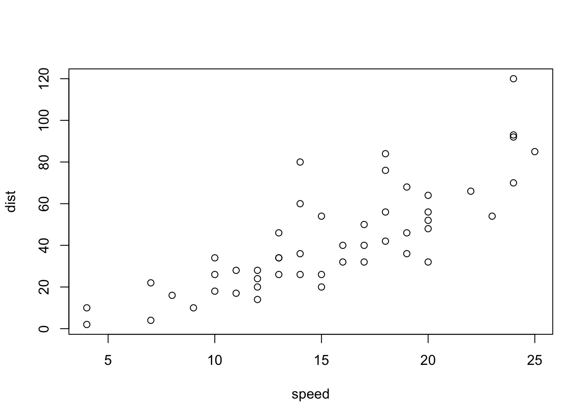

This is a test markdown from me
plot(cars)
引言
中文LaTeX文档并非难题。当然这句话得站在巨人 CTeX 的肩膀上才能说，它让我们只需要一句
\documentclass{ctexart} % 或者ctexrep/ctexbook或者
\usepackage{ctex}就轻松搞定中文LaTeX排版问题。
字体和选项
LaTeX包ctex支持若干种字体选项，如果你是ctex老用户，请注意这里我们要求的最低版本是2.2，你可能需要升级你的LaTeX包。从版本2.0开始，ctex支持根据不同操作系统自动选择中文字体，简直是为人类进步作出了巨大贡献，我们再也不必费尽口舌向用户解释“啊，你用Windows啊，那么你该使用什么字体；啊，你用Mac啊，又该如何如何”。
下面的YAML元数据应该能满足多数用户的需求，主要设置两项参数：文档类为ctexart（当然也可以是别的类），输出格式为rticles::ctex，其默认LaTeX引擎为XeLaTeX（真的，别纠结你的旧爱PDFLaTeX了）。
---
documentclass: ctexart
output: rticles::ctex
---rticles::ctex的参数都是普通的pdf_document参数，参见文档rmarkdown包的文档，这里就不赘述了。
Windows和Mac用户应该都已经有自带的中文字体了。Linux用户可以考虑 Fandol字体，它号称是免费的，不过我们也没太搞清楚它的来头。如果你不想操心这些问题，我们强烈建议你卸载你当前的 LaTeX 套装（TeX Live 或 MiKTeX 或 MacTeX），换上 TinyTeX，一切将会自动化搞定。
devtools::install_github(c('rstudio/rmarkdown', 'yihui/tinytex'))
tinytex::install_tinytex()R代码段
R代码用R Markdown的语法嵌入，即三个反引号开始一段代码```{r}和三个反引号``` 结束一段代码：
options(digits = 4)
fit = lm(dist ~ speed, data = cars)
coef(summary(fit))## Estimate Std. Error t value Pr(>|t|)
## (Intercept) -17.579 6.7584 -2.601 1.232e-02
## speed 3.932 0.4155 9.464 1.490e-12b = coef(fit)上面回归方程中的斜率是3.9324，完整的回归方程为：\[ Y = -17.5791 + 3.9324x\]
画图当然也是木有问题的啦，想画就说嘛，不说我怎么知道你想画呢？
par(mar = c(4, 4, .1, .1), las = 1)
plot(cars, pch = 19)
abline(fit, col = 'red')Figure 1: cars数据散点图以及回归直线。
请不要问我为什么图浮动到下一页去了，这么初级的LaTeX问题问出来信不信我扁你。
源代码控
这里提供的rticles模板可能由于种种原因不能满足客官的要求，LaTeX用户就是这样永无止境地调格式（唉，跟Word用户到底有啥区别呢）。若真是需要调整，你可以复制一份默认模板去改。默认模板来自 Pandoc：https://github.com/jgm/pandoc/blob/master/data/templates/default.latex 它是一个文本文件。若熟悉LaTeX的话一看就明白，只不过里面有些Pandoc变量而已；若不熟悉LaTeX我们在这里说了也白说，花几天时间好好啃一啃LaTeX入门手册吧。
小结
事实证明我们可以理直气壮地通过XeLaTeX将中文R Markdown转化为PDF文档，麻麻再也不用担心我的论文满屏幕都是反斜杠，朕养完小白鼠之后终于不必先折腾三个小时LaTeX再开始写实验报告了：打开RStudio，菜单File > New File > R Markdown，然后从模板中选择CTeX Documents，搞定。